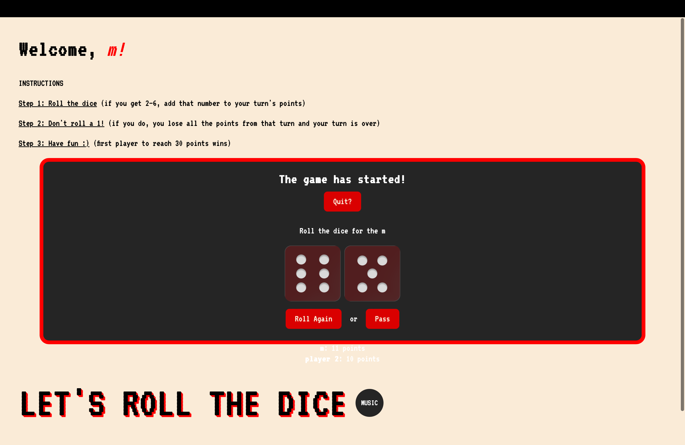
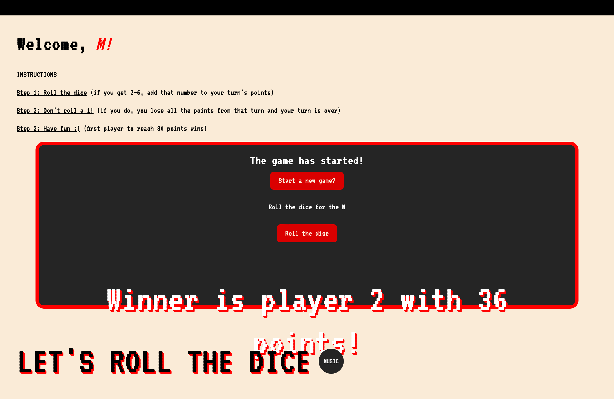

Prototypes

Figure 1. Showing users score during the game.

Figure 2. Winning title presented after winning the game.
USER 1:
Demographic:
Age range: Gen Z
Technology knowledge: Proficient
Education: Undergrad
Major: MESA
Tasks completed:
Typed their name upon entry
Read the instructions
Played music
Started and completed the game
Won
Results:
User had a better understanding of the game since it worked correctly and they were able to see their results while playing which was helpful. Now that they were able to win and the game didn’t keep going past the 30 points, they no longer wondered why the game was still going. They wanted to play the again after winning but too many bugs were present. They pressed the roll the dice button and the winning title would not leave. Start a new game made them type their names again.
USER 2:
Demographic:
Age range: Gen Z
Technology knowledge: Proficient
Education: Undergrad graduate
Major: DES
Tasks completed:
Typed their name upon entry
Played music
Started and completed the game
Results:
User looked around the page without reading the instructions and went straight to pressing buttons. First was the background music which they enjoyed being able to pause and start it again. Initially they did not notice that the game was showing their score. Commented on the placement and color of the score since it kept moving around from the game dark screen to the overall light colored background.
BUGS:
THE SOUND FOR ROLLING THE DICE WOULD KEEP PLAYING WHILE THE DICE IMAGES HAD ALREADY APPEARED SO I HAD TO FIX THE TIMING FOR THAT.
DURING THE FIRST ROUND OF TESTING WHEN I IMPLEMENTED THE SCORE FEATURE, THE NUMBERS WEREN’T MATCHING THE DICE. I REALIZED THAT I HAD NAMED/NUMBERED THE DICE INCORRECTLY IN THEIR IMAGE TITLE.
WINNER ANNOUNCEMENT AND SCORE PLACEMENT ISN’T CONSISTENT AS IT KEEPS MOVING AROUND OUT OF FRAME.
WINNER ANNOUNCEMENT DOES NOT MOVE WHEN WANTING TO START A NEW GAME.